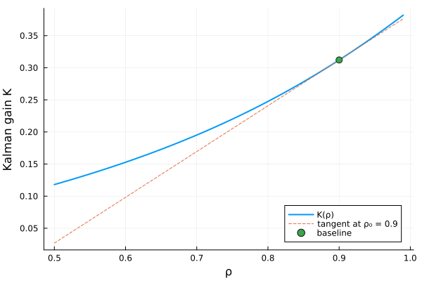
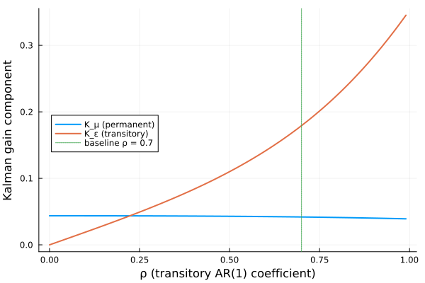

Algebraic Riccati (DARE)
ared(A, B, R, Q, S) solves the discrete algebraic Riccati equation
\[A^\top X A - X \;-\; (A^\top X B + S)\,(R + B^\top X B)^{-1}\,(B^\top X A + S^\top) \;+\; Q \;=\; 0 \tag{DARE}\]
via the generalised-eigenproblem method of Arnold and Laub (MatrixEquations.jl's Riccati solvers). The four-argument call ared(A, B, R, Q) is the $S = 0$ shorthand. The solver returns the stabilising symmetric solution $X$ and the optimal-LQR gain
\[F \;=\; G^{-1}(B^\top X A + S^\top), \qquad G \;=\; R + B^\top X B,\]
so the closed-loop dynamics are $A_c = A - B F$. MatrixEquationsAD differentiates both outputs (X and F) under ForwardDiff and Enzyme.
Implementation pointers:
ext/enzyme_riccati.jl,ext/forwarddiff_riccati.jl— AD frontends.ext/riccati_derivatives.jl— shared tangent / adjoint plan.
Primal assumptions
The rule assumes the selected stabilising (or anti-stabilising) Riccati branch is locally smooth, $G = R + B^\top X B$ is nonsingular, and the closed-loop Lyapunov operator $L_{A_c}[\Delta X] = \Delta X - A_c^\top \Delta X A_c$ is nonsingular. The usual sufficient conditions are stabilisability and detectability, together with a well-conditioned positive-definite $G$.
Worked example
A 2-state, 1-input LQR:
julia> using MatrixEquations: ared
julia> A = [0.95 0.0; 0.0 0.8]
2×2 Matrix{Float64}:
0.95 0.0
0.0 0.8
julia> B = reshape([1.0, 0.5], 2, 1)
2×1 Matrix{Float64}:
1.0
0.5
julia> R = reshape([0.1], 1, 1)
1×1 Matrix{Float64}:
0.1
julia> Q = [1.0 0.0; 0.0 1.0]
2×2 Matrix{Float64}:
1.0 0.0
0.0 1.0
julia> X, _, F = ared(A, B, R, Q);
julia> X
2×2 Matrix{Float64}:
1.62885 -0.937017
-0.937017 2.61078
julia> F
1×2 Matrix{Float64}:
0.763104 0.204009
julia> # Closed-loop Schur stability: ρ(A - B F) < 1
using LinearAlgebra: eigvals
julia> maximum(abs, eigvals(A - B * F)) < 1
trueThe primal residual of (DARE) is $\approx 0$; the stabilising gain F keeps the closed-loop spectrum strictly inside the unit disc.
Example: stationary Kalman filter via DARE duality
The discrete-time linear filtering problem (Muth 1960; Ljungqvist & Sargent, Recursive Macroeconomic Theory, chapter on optimal linear filtering) is
\[x_{t+1} \;=\; A\,x_t \;+\; C\,w_{t+1}, \qquad y_t \;=\; G\,x_t \;+\; v_t,\]
with $w_t \sim \mathcal{N}(0, I)$ orthogonal to $v_t \sim \mathcal{N}(0, R)$. The stationary one-step-ahead error covariance $P = \lim_{t \to \infty} \mathbb{E}[(x_t - \hat x_{t|t-1})(x_t - \hat x_{t|t-1})^\top]$ satisfies the filter DARE
\[P \;=\; A\,P\,A^\top \;-\; A\,P\,G^\top\,(G\,P\,G^\top + R)^{-1}\,G\,P\,A^\top \;+\; C\,C^\top, \tag{FDARE}\]
and the stationary Kalman gain is
\[K \;=\; A\,P\,G^\top\,(G\,P\,G^\top + R)^{-1}.\]
By the LQR ↔ Kalman duality, (FDARE) is the same equation as the control (DARE) under the substitution $(A_{\text{ctrl}}, B_{\text{ctrl}}, R_{\text{ctrl}}, Q_{\text{ctrl}}) = (A^\top, G^\top, R, C C^\top)$. Calling ared(A_filter', G_filter', R, C*C') therefore returns $X = P$ (stationary filter covariance) and $F = K^\top$ (Kalman gain, transposed). Both AD rules carry over verbatim.
Scalar signal-extraction example
Take the canonical scalar AR(1) signal observed with noise:
\[x_{t+1} \;=\; \rho\,x_t \;+\; w_{t+1}, \qquad y_t \;=\; x_t \;+\; v_t, \qquad w_t \sim \mathcal{N}(0,\, \sigma_w^2), \qquad v_t \sim \mathcal{N}(0,\, \sigma_v^2).\]
In closed form $P$ is the positive root of
\[P^2 \;+\; P\bigl[\sigma_v^2(1 - \rho^2) - \sigma_w^2\bigr] \;-\; \sigma_w^2\,\sigma_v^2 \;=\; 0, \qquad K \;=\; \frac{\rho\,P}{P + \sigma_v^2}.\]
ared reproduces both:
julia> using MatrixEquations: ared
julia> ρ, σ_w, σ_v = 0.9, 0.5, 1.0;
julia> A = reshape([ρ], 1, 1); G = reshape([1.0], 1, 1);
julia> R = reshape([σ_v^2], 1, 1); Q = reshape([σ_w^2], 1, 1);
julia> X, _, F = ared(A', G', R, Q);
julia> P = X[1, 1]
0.5308991914547275
julia> K = F[1, 1] # equals ρ·P/(P + σ_v²)
0.31211021272747524
julia> s = σ_w^2 - σ_v^2 * (1 - ρ^2);
julia> P_closed = (s + sqrt(s^2 + 4 * σ_w^2 * σ_v^2)) / 2;
julia> isapprox(P, P_closed; atol = 1.0e-12)
trueDifferentiating the Kalman gain
The same closure differentiates end-to-end through ared. Build the four matrices via eltype(θ) so ForwardDiff Dual partials flow into every input:
ENV["GKSwstype"] = "100" # GR headless backend for CI
using ForwardDiff
using MatrixEquations: ared
using MatrixEquationsAD
function kalman_gain(θ)
ρ, σ_w, σ_v = θ
T = eltype(θ)
A = reshape(T[ρ], 1, 1)
G = reshape(T[1.0], 1, 1)
R = reshape(T[σ_v^2], 1, 1)
Q = reshape(T[σ_w^2], 1, 1)
_, _, F = ared(A, G, R, Q) # uses A_ctrl = A_filter^⊤ = ρ (scalar)
return F[1, 1]
end
θ₀ = [0.9, 0.5, 1.0] # (ρ, σ_w, σ_v)
K = kalman_gain(θ₀)
∇K = ForwardDiff.gradient(kalman_gain, θ₀)3-element Vector{Float64}:
0.7131031654751965
0.5868344342552804
-0.29341721712763996The three components $\partial K/\partial \rho$, $\partial K/\partial \sigma_w$, $\partial K/\partial \sigma_v$ match the economic intuition:
∇K3-element Vector{Float64}:
0.7131031654751965
0.5868344342552804
-0.29341721712763996∂K/∂ρ > 0 (more persistence → the filter trusts the model more); ∂K/∂σ_w > 0 (larger process noise → trust the data more); ∂K/∂σ_v < 0 (noisier observations → trust the data less).
Sweeping $\rho$ over $[0.5, 0.99]$ at fixed $\sigma_w, \sigma_v$ and overlaying the tangent $K(\rho_0) + (\partial K / \partial \rho)(\rho - \rho_0)$:
using Plots
ρ_range = range(0.5, 0.99, length = 50)
K_curve = map(ρ_range) do ρ
kalman_gain([ρ, θ₀[2], θ₀[3]])
end
tangent = K .+ ∇K[1] .* (ρ_range .- θ₀[1])
plot(ρ_range, K_curve;
label = "K(ρ)", xlabel = "ρ", ylabel = "Kalman gain K",
legend = :bottomright, linewidth = 2)
plot!(ρ_range, tangent;
label = "tangent at ρ₀ = $(θ₀[1])", linestyle = :dash)
scatter!([θ₀[1]], [K]; label = "baseline", markersize = 5)
Non-invertible observation: Muth permanent/transitory decomposition
The scalar case has an invertible observation map ($G = 1$). A more interesting case is when the observation pools several latent components and the filter must use the dynamics to disentangle them. The Muth permanent/transitory decomposition (Muth 1960; Ljungqvist & Sargent, optimal-linear-filtering chapter) is the canonical example: the state $x_t = [\mu_t,\,\varepsilon_t]^\top$ decomposes income (or TFP, or any signal) into a permanent random-walk component and a transitory AR(1) component,
\[\mu_{t+1} \;=\; \mu_t \;+\; \nu_{t+1}, \qquad \varepsilon_{t+1} \;=\; \rho\,\varepsilon_t \;+\; \omega_{t+1}, \qquad \nu_t \sim \mathcal{N}(0, \sigma_\nu^2), \quad \omega_t \sim \mathcal{N}(0, \sigma_\omega^2),\]
and the econometrician only observes the sum plus measurement noise,
\[y_t \;=\; \mu_t \;+\; \varepsilon_t \;+\; v_t, \qquad v_t \sim \mathcal{N}(0, \sigma_v^2).\]
Stacked, $G = \begin{bmatrix}1 & 1\end{bmatrix}$ is $1 \times 2$ — the mapping from state to observation is not invertible. The filter nonetheless identifies both components in the limit because the two state coordinates have different dynamics: permanent shocks live forever while transitory shocks decay at rate $\rho$. The Kalman gain $K \in \mathbb{R}^{2 \times 1}$ encodes how a unit observation surprise is split between updating $\hat\mu$ and updating $\hat\varepsilon$.
ENV["GKSwstype"] = "100" # GR headless backend for CI
using ForwardDiff
using MatrixEquations: ared
using MatrixEquationsAD
function muth_filter(ρ, σ_ν, σ_ω, σ_v)
T = promote_type(typeof(ρ), typeof(σ_ν), typeof(σ_ω), typeof(σ_v))
A_filt = T[1.0 0.0;
0.0 ρ]
G_filt = T[1.0 1.0]
Q = T[σ_ν^2 0.0;
0.0 σ_ω^2]
R = reshape(T[σ_v^2], 1, 1)
# LQR ↔ Kalman duality requires (A_ctrl, B_ctrl) = (A_filtᵀ, G_filtᵀ);
# materialise the transposes so the StridedMatrix AD dispatch fires.
A_ctrl = permutedims(A_filt)
G_ctrl = permutedims(G_filt)
X, _, F = ared(A_ctrl, G_ctrl, R, Q)
return X, permutedims(F) # X = P (2×2), K = Fᵀ (2×1)
end
# Baseline parameters: small permanent shock, larger transitory shock,
# unit measurement noise. ρ = 0.7 says transitory shocks decay with
# half-life ≈ 2 periods.
σ_ν, σ_ω, σ_v = 0.05, 0.5, 1.0
ρ_baseline = 0.7
P, K = muth_filter(ρ_baseline, σ_ν, σ_ω, σ_v)
P, K([0.09533349966553528 -0.035658122107798396; -0.035658122107798396 0.4004430192134004], [0.04189332522582327; 0.17926047676848803;;])The first column of K is the gain on the permanent component $\hat\mu_{t|t}$; the second is the gain on the transitory component $\hat\varepsilon_{t|t}$. Their ratio is informative: when $K_\mu / K_\varepsilon$ is large the filter attributes new information mostly to a shift in the permanent component, and when it is small the filter attributes it mostly to a transient blip.
Sweep $\rho$ over $[0,\, 0.99]$ at fixed $\sigma_\nu, \sigma_\omega, \sigma_v$ and plot both gain components on the same axes:
using Plots
ρ_grid = range(0.0, 0.99, length = 60)
gains = [muth_filter(ρ, σ_ν, σ_ω, σ_v)[2] for ρ in ρ_grid]
K_μ = [g[1] for g in gains]
K_ε = [g[2] for g in gains]
plot(ρ_grid, K_μ;
label = "K_μ (permanent)", xlabel = "ρ (transitory AR(1) coefficient)",
ylabel = "Kalman gain component", legend = :left, linewidth = 2)
plot!(ρ_grid, K_ε; label = "K_ε (transitory)", linewidth = 2)
vline!([ρ_baseline]; label = "baseline ρ = $(ρ_baseline)", linestyle = :dot)
Two limits explain the shape:
- $\rho \to 0$ (no transitory autocorrelation): $\varepsilon_t$ is white noise, indistinguishable from measurement noise except by its variance. The filter has nothing to predict in the transitory component, so $K_\varepsilon \to 0$; nearly all updating goes into $\hat\mu$.
- $\rho \to 1$ (transitory is itself a random walk): the two state components have identical dynamics. The filter cannot tell them apart from the observation, so it splits the gain in proportion to their innovation variances (here $\sigma_\omega^2 \gg \sigma_\nu^2$, so $K_\varepsilon$ dominates).
ForwardDiff returns the sensitivities of any scalar summary directly. For example, the gain ratio $K_\mu / K_\varepsilon$ quantifies how permanent the filter believes the observed surprise is:
function gain_ratio(θ)
ρ, σ_ν, σ_ω, σ_v = θ
_, K = muth_filter(ρ, σ_ν, σ_ω, σ_v)
return K[1] / K[2]
end
θ₀ = [ρ_baseline, σ_ν, σ_ω, σ_v]
∇r = ForwardDiff.gradient(gain_ratio, θ₀)4-element Vector{Float64}:
-0.5816153402127244
5.002659304359619
-0.7218208271662547
0.11077744836514111The signs are:
- $\partial(K_\mu/K_\varepsilon)/\partial \rho < 0$ — more persistence in the transitory component makes the filter attribute more of a surprise to $\hat\varepsilon$ and less to $\hat\mu$.
- $\partial(K_\mu/K_\varepsilon)/\partial \sigma_\nu > 0$ — larger permanent-shock variance pushes the filter toward permanent updating.
- $\partial(K_\mu/K_\varepsilon)/\partial \sigma_\omega < 0$ — larger transitory-shock variance pushes the other way.
- $\partial(K_\mu/K_\varepsilon)/\partial \sigma_v$ is small — once the surprise has been split, measurement noise scales both components.
(ρ = ∇r[1], σ_ν = ∇r[2], σ_ω = ∇r[3], σ_v = ∇r[4])(ρ = -0.5816153402127244, σ_ν = 5.002659304359619, σ_ω = -0.7218208271662547, σ_v = 0.11077744836514111)Differentials and AD rules
Let
\[G \;=\; R + B^\top X B, \qquad F \;=\; G^{-1}(B^\top X A + S^\top), \qquad A_c \;=\; A - B\,F.\]
Differentiating (DARE) and using $\Delta G = \Delta R + \Delta B^\top X B + B^\top \Delta X B + B^\top X \Delta B$, $\Delta M = \Delta B^\top X A + B^\top \Delta X A + B^\top X \Delta A + \Delta S^\top$ gives a discrete Lyapunov equation for $\Delta X$ against the closed-loop $A_c$:
\[\Delta X \;-\; A_c^\top\,\Delta X\,A_c \;=\; P_n(H),\]
with
\[\begin{aligned} H \;=\; &\;\Delta Q \;+\; \Delta A^\top X A_c \;+\; A_c^\top X \Delta A \\ &-\; A_c^\top X \Delta B\,F \;-\; F^\top \Delta B^\top X A_c \;+\; F^\top \Delta R\,F \\ &-\; \Delta S\,F \;-\; F^\top \Delta S^\top, \end{aligned}\]
where $P_n(\cdot) = \tfrac{1}{2}(\cdot + \cdot^\top)$ symmetrises an $n \times n$ matrix. For symmetric perturbations of $Q$ and $R$ and arbitrary cross-term perturbations of $S$, $P_n$ is a no-op on the symmetric pieces and only matters in the asymmetric components.
After solving for $\Delta X$ (one discrete Lyapunov solve against the closed-loop $A_c$), the gain tangent is
\[\Delta F \;=\; G^{-1}\bigl(\Delta M - \Delta G\,F\bigr).\]
MatrixEquationsAD caches the closed-loop Schur factorisation $A_c = Z S Z^\top$ and the Cholesky / LU of $G$ on the value layer. ForwardDiff chunks of width $N$ and Enzyme BatchDuplicated of width $N$ reuse both caches: each lane is one triangular Lyapunov sweep against the shared Schur factors plus one $G^{-1}$ solve for $\Delta F$.
VJP
The reverse pass accepts cotangents for both differentiated outputs: $\bar X$ and $\bar F$. Propagate through $F$ first:
\[\Lambda \;=\; G^{-\top}\,\bar F, \qquad \Theta \;=\; P_m\bigl(-\Lambda\,F^\top\bigr),\]
with $P_m$ symmetrising $m \times m$ matrices. The direct $\bar F$-contributions are
\[\begin{aligned} \bar A &\mathrel{+}= X^\top\,B\,\Lambda, \\ \bar B &\mathrel{+}= X\,A\,\Lambda^\top \;+\; X\,B\,\Theta^\top \;+\; X^\top\,B\,\Theta, \\ \bar R &\mathrel{+}= \Theta, \\ \bar S &\mathrel{+}= \Lambda^\top. \end{aligned}\]
The cotangent passed to the closed-loop Lyapunov adjoint solve is
\[\bar X_{\text{total}} \;=\; P_n\bigl(\bar X + B\,\Lambda\,A^\top + B\,\Theta\,B^\top\bigr).\]
Let $Y$ solve the adjoint of the tangent Lyapunov operator, $Y - A_c\,Y\,A_c^\top = \bar X_{\text{total}}$. Then add the remaining adjoints:
\[\begin{aligned} \bar Q &\mathrel{+}= Y, \\ \bar A &\mathrel{+}= X\,A_c\,Y^\top + X^\top\,A_c\,Y, \\ \bar B &\mathrel{-}= X^\top\,A_c\,Y\,F^\top + X\,A_c\,Y^\top\,F^\top, \\ \bar R &\mathrel{+}= F\,Y\,F^\top, \\ \bar S &\mathrel{-}= Y\,F^\top + Y^\top\,F^\top. \end{aligned}\]
Only X and F are differentiated. The evals, Z, and scalinfo return values are returned with zero shadows. The default four-argument method is handled by setting $S = 0$ before dispatching to the five-argument rule. The closed-loop Schur and the $G$ factorisation are stashed on Enzyme's tape, so multiple reverse cotangents (e.g. simultaneous $\bar X$ and $\bar F$) share one factorisation pair.
References:
- MatrixEquations.jl documents
ared, the stabilising gain $F$, and (DARE) in its Riccati solver documentation. - Arnold and Laub's generalised-eigenproblem method: DOI:10.1109/PROC.1984.13083.
- Kao, T.-T. and Hennequin, M. (2020). Automatic differentiation of Sylvester, Lyapunov, and algebraic Riccati equations. arXiv:2011.11430. The general implicit-function recipe used here is the one applied there to the continuous algebraic Riccati equation; the discrete-time formulas in this section are derived in-house against the closed-loop Lyapunov operator $L_{A_c}[\cdot]$.
- Muth, J. F. (1960). Optimal properties of exponentially weighted forecasts. Journal of the American Statistical Association DOI:10.1080/01621459.1960.10483352. Original scalar signal-extraction problem solved by the Kalman filter; the canonical "stationary Kalman filter" example above.
- Ljungqvist, L. and Sargent, T. J. Recursive Macroeconomic Theory (4th ed., MIT Press, 2018). The optimal-linear-filtering chapter develops the same DARE-via-duality machinery and applies it to the permanent-income, signal-extraction, and innovations-representation examples cited above.
- Anderson, B. D. O. and Moore, J. B. Optimal Filtering (Prentice-Hall, 1979, repr. Dover 2005). Standard reference for the LQR ↔ Kalman duality $(A_{\text{ctrl}}, B_{\text{ctrl}}, R_{\text{ctrl}}, Q_{\text{ctrl}}) = (A_{\text{filt}}^\top, G_{\text{filt}}^\top, R, CC^\top)$.